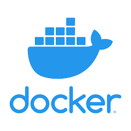

linkedIn GitHub NPM josephcoppin@gmail.com @revers3ntropy for most things
Skills
Programming
I have experience programming with many languages and technologies, and have done web development, game development and more.
Rough ordering of skill level of languages:

Tools

|

|

|
||
| Trello | DNS | Chrome Dev Tools | CentOS | React Native |

|
JetBrains’ IDEs | LAMP stack |

|
|

|

|

|
||
|  |

|
Concepts && General
| Object Oriented Programming | Programming Language Design | Relational Databases |
| Complex Server-Client Models | Dynamic Programming | Problem Solving & Abstractification |
EXPERIENCE
World Cube Association Software Team
I am on the World Cube Association Software Team (WST). The WST maintains the WCA website, tools, infrastructure and other software that is needed to run the WCA. I help maintain and improve the website of the WCA. At the moment I am helping migrate to React from Ruby on Rails.
Work Experience at JumpTech
I spent a week working with the silicon-fen startup JumpTech. During the week, I created some documentation and examples for their API using Postman. I then created a GraphQL client in TypeScript which was used by pen-testers when testing that API. I then did some pre-pentest pen testing of their site, before picking up their TypeScript general utilities project. I went into their office for 4 days and worked remotely the last day. I attended daily standup, organised and went to meetings, and did pair programming with the senior devs and worked independently throughout the week.
InvestIn Internship
This 5-day computer science internship covered full-stack development, cybersecurity, building AI, big data and more. I learnt how to pen-test a website; program front-end applications in JavaScript, CSS and HTML, develop a KNN learning algorithm using excel, and all alongside professionals in each aspect of the week.
EDUCATION
A Levels
King’s Ely, Ely, Cambridgeshire
I am currently studying my A levels at King’s Ely. I am taking Maths, Further Maths, Computer Science and Physics. My predicted grades are 4 A*s.
GCSEs
King’s Ely, Ely, Cambridgeshire
Computer Science, Further Maths, Design Engineering, Maths, Physics, Chemistry, Biology, and Religious Studies: 9
Geography, English Literature and English Language: 8
AWARDS
- King’s Scholarship from King’s Ely (based on GCSE scores)
- KE (King’s Ely) 6th Form Academic Scholarship
- KE 6th Form STEM Scholarship
- 2022 TCS Oxford Computing Challenge 57 points, distinction, best in school
- KE Pye Foundation Prize for Contributions to Computing 2022
- KE Computer Science Prize 2022
- 2021 Bebras Challenge 170 points, distinction, gold, best in school
- 2021 TCS Oxford Computing Challenge 48 points, distinction
- Semifinals (Gigafinal) of the Delancey National Chess tournament three times
- Best Design award at Robocon 2019
- Silver in 2021 UK Maths Challenge
- KE Academic Prize 2021
- KE Pye Foundation Prize for Contributions to Computing 2021
- 2020 Senior Maths Challenge Bronze Award - Best in Year
- 2019 Maths Olympiad Intermediate with merit
- 2019 TCS Oxford Computing Challenge: 28 points, intermediate award with distinction
- KE Academic Prize 2019
- Gold award in the British Biology Olympiad 2019
- KE School Shippy Maths Cup 2018
- Bronze Duke Of Edinburgh Award, which included:
- Learning Esperanto
- Volunteering at the junior school chess club
- Volunteering at the junior school photography club
- Table tennis
PERSONAL PROJECTS
Most of these projects and more can be found on my GitHub, revers3ntropy (here), my NPM profile (also revers3ntropy) or on my websites revers3ntropy.com, josephcoppin.com and entropygames.io.
EntropyScript
TypeScript, JavaScript, WebPack
Entropy Script is a scripting language which is the scripting language for Entropy Engine. It uses a syntax similar to TypeScript and Go, and has functions, variables, classes, objects, error handling, tracebacks and static type checking at runtime, and much more. It is written entirely from scratch in TypeScript and Javascript: it takes in a string, tokensises, parses and interprets it to run the code. I have also made a translator for it which compiles Entropy Script into JavaScript and Python. Try it out on the web here https://entropygames.io/entropy-script/run. The source code is here https://github.com/revers3ntropy/entropy-script. See the documentation here https://entropygames.io/entropy-script/. The NPM package is here https://www.npmjs.com/package/entropy-script.
Entropy Engine
TypeScript, WebPack
This is the core of entropyengine.dev. It is a modularised game engine for the HTML canvas. It uses a Entity-Component-System architecture (similarly to Unity). It can be used programmatically with JavaScript in the browser. It also has support for using EntropyScript as the scripting language, the original intent of ES. It is on GitHub here https://github.com/revers3ntropy/entropy-engine, and the NPM package is here https://www.npmjs.com/package/entropy-engine.

Entropy Engine Dev
TypeScript, JavaScript, HTML, CSS, LESS, WebPack, JQuery, NodeJS, MySQL, SQL
*This is currently in development and not functional*
This is a game engine that I created on the web, for web games. It includes a basic IDE in the engine to edit scripts which you can attach to sprites, basic physics engine, the ability to share and edit projects with others, and a basic asset system, as well as a full account system behind it. You can export your game as a HTML file, which can then be included in websites, and support is being added for hosting the game on the website itself once published. Use it at entropyengine.dev. Only parts of the project are open source for security reasons due to the account system. The two npm helper packages I made for it can be found here https://github.com/revers3ntropy/eeclient and here https://github.com/revers3ntropy/npx-init-eeclient. Some very basic documentation can be found here https://entropyengine.dev/docs/getting-started.html. I also designed a custom build pipeline, which includes a dev server, timing information, automatic upload and bundling using WebPack.
Home Server
Go, HTML, CSS, JS, Linux, BIND9
I had an old HP windows laptop laying around, and decided to turn it into a server. I took it apart and scrapped everything except the core components. I upgraded the RAM and SSD, built it a case from aluminium and acrylic, and finally loaded Ubuntu. Then I wrote a HTTP server in GoLang and downloaded and configured BIND to act as a DNS server on the same device. Now, on my home network, you can add shortcuts to any URL, like ‘to/something’, which will take you to the URL in the database corresponding with ‘something’. The redirects are stored in a simple CSV file. I also made a nice landing page to view, add and delete redirects.

Chaos
Python, pygame
In this game which I wrote using PyGame in Python, you can explore an infinite 3D world from a top-down view. Similarly to Minecraft, you can place and destroy any blocks, save the game and reload the world, and chop down trees and mine for building materials. It taught me how to use object oriented programming, pygame, how to draw pixel art, and much more. It uses my own chunk-based procedural infinite world generation algorithm, which allows you to save the world state to file and reload with your changes intact. I also learnt how to use perlin noise to generate interesting terrain. You can find it on github here https://github.com/revers3ntropy/chaos_v1.
revers3ntropy.com
HTML, JavaScript, SQL, PHP, CSS
This website is where I put lots of my smaller projects: games like Dash, simulations like the ecology simulation v5, and some polls. It uses a MySQL database for a fully custom account system, which includes global leaderboards for most of the games.
Ecology Simulation v5
Javascript, HTML
This has all the functionality of the ecology simulation, with a few extras. It has a much better UX, and also has reproduction and evolution in. You can track different traits over time. You can play around with it here.
Sorting Algorithms
React, Javascript, HTML, JSX, CSS
Watch sorting algorithms work with this aesthetically pleasing sorting algorithm visualiser here. This was my first React project and taught me how to use the framework.
Physics Simulator
Javascript, HTMl, CSS
In this, you can run many different simulations using a ball collision physics engine. This project was great in combining physics, maths and computer science for me. You can play around with it here.
Pong
Javascript, HTMl, CSS, PHP, SQL, WebSockets
Play the classic game Pong. Try to get a highscore and beat everyone else, or play with a friend (in development). Play against a progressively better bot and beat it to move up a level, but you only get 5 lives here. Or create a match and play against someone in real time here.
3D Engine
Python, Pygame
This is a 3D graphics engine I built completely from scratch using pygame. You can see objects in 3D with a light source, move around with a camera, and import 3D objects as .obj files. You can find it on GitHub here. I followed this tutorial.
HOBBIES & MISCELLANEOUS
- Chess - I have competed in various chess competitions, including the national semi finals three times and the national quarterfinals over 5 times. I founded and ran the school chess club for 6 months when I was in year 7, and helped out at the school chess club for DofE in year 10.
- Rubik’s cubing - I have competed in 24 competitions, including the World and European championships. My best (unofficial) time is 10.45 seconds. I also founded and ran a ‘learn to solve the rubik's cube’ club when I was in year 5, in which 3 people learnt to solve it and many more started learning.
- Woodworking - my most notable project is a full 19x19 Go board. I also made an engraved bedside table.
- Photography - I like to do photography in my spare time, primarily wildlife photography. You can find many of my photos on my instagram @jcphotography776.
- I love playing many sports, including table tennis, tennis, badminton and squash.
- Bioactive Vivarium - I researched and made two semi-self-sustaining enclosures for my pet crested gecko. This included creating my own compost mixture, using spray foam to hold driftwood in place, and using a false-bottom technique to prevent mould growth.
- Ants - I kept ants for a few years, and have built various enclosures for them. I have attempted using many techniques to build them, including 3D printing, using test tubes, air bricks and more, but the most successful one was using a glass fish tank full of soil which is again bioactive.
Erasmus Exchange
I am involved in the 2020-2022 Erasmus exchange. I was involved in a STEM themed exchange, in which we were looking at how we can be more sustainable and environmentally friendly. I thoroughly enjoyed it, and my group won the best wind turbine design.
Then in 2022 I went to Turkey for the second half of the trip, in which my group won the best project, which was researching renewables for Denizli.
Turing Club
I also founded the King’s Ely Turing Society. In this I have enjoyed teaching younger years Python, JavaScript and more. This has hugely helped with my teaching and leadership skills, which will be useful not only for university but also into my software career. I also run the King’s Ely GitHub page, where I put projects that students have done and projects I am doing for the school (/Kings-Ely).
Coding Competitions
As well as building apps and languages, I also enjoy taking part in coding competitions. As well as the Bebras and Oxford computing challenge, I have also done the British Informatics Olympiad and Google Kickstart: an international competition for software developers in which I came in the top 50% in 2022 (round C). In the 2022 Oxford Computing Challenge I got 57 points which is the best in the school, which is approximately 20-40th in the UK (as 60/68 was 20th). I also enjoy doing past papers for the South Africa Informatics Olympiad, British Informatics Olympiad and some Project Euler problems. These problems really help with my problem solving skills as well as helping with my general programming skills and developing a deeper understanding of the languages I am using (namely C++ and Python). I have put lots of my solutions here: https://github.com/revers3ntropy/CodingChallenges.